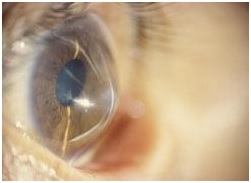
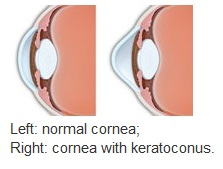
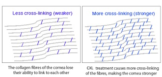
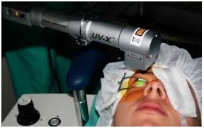

Your cornea is the clear, dome-shaped window at the front of your eye. It focuses light into your eye. Keratoconus is when the cornea thins out and bulges like a cone. Changing the shape of the cornea brings light rays out of focus. As a result, your vision is blurry and distorted, making daily tasks like reading or driving difficult.

Doctors also do not know for sure why people have keratoconus. In some cases, it appears to be genetic (passed down in families), in some it si due to excessive eye rubbing. About 1 out of 10 people with keratoconus have a parent who has it too.
New research suggests the weakening of the corneal tissue that leads to keratoconus may be due to an imbalance of enzymes within the cornea. This imbalance makes the cornea more susceptible to oxidative damage from compounds called free radicals, causing it to weaken and bulge forward.
Risk factors for oxidative damage and weakening of the cornea include a genetic predisposition, explaining why keratoconus often affects more than one member of the same family.
Keratoconus often starts when people are in their late teens to early 20s. The vision symptoms slowly get worse over a period of about 10 to 20 years.
Keratoconus often affects both eyes (generally one eye is more affected than other one), and can lead to very different vision between the two eyes. Symptoms can differ in each eye, and they can change over time.

In the early stage, keratoconus symptoms can include:
In later stages, keratoconus symptoms often include:
Keratoconus usually takes years to go from early to late stage. For some people, though, keratoconus can get worse quickly. The cornea can swell suddenly and start to scar. When the cornea has scar tissue, it loses its smoothness and becomes less clear. As a result, vision grows even more distorted and blurry.
Keratoconus can be diagnosed through a routine eye exam. Your ophthalmologist will examine your cornea, and may measure its curve. This helps show if there is a change in its shape. Your ophthalmologist may also map your cornea’s surface using a special computer (Corneal Topography and Pachymetry). This detailed image shows the condition of the cornea’s surface.
Keratoconus treatment depends on your symptoms. When your symptoms are mild, your vision can be corrected with eyeglasses. Later you may need to wear special hard contact lenses to help keep vision in proper focus.
Here are other ways that your ophthalmologist might treat keratoconus:
Collagen cross-linking Using a special UV light and eye drops to strengthen the cornea. Doing this helps to flatten or stiffen your cornea, keeping it from bulging further. This procedure, also called corneal collagen cross-linking or CXL, strengthens corneal tissue to halt bulging of the eye's surface in keratoconus.
Corneal crosslinking may reduce significantly the need for corneal transplants among keratoconus patients. It also is being investigated as a way to treat or prevent complications following LASIK or other vision correction surgery.
Using a combination of corneal crosslinking and Intacs implants (see above) also has demonstrated promising results for treating keratoconus.
Progressive mild to moderate keratoconus can be safely and successfully treated with a combination of corneal crosslinking and implantation of a toric phakic IOL.
 
Intacs This is a small curved device that your ophthalmologist surgically puts in your cornea. Intacs help flatten the curve of your cornea to improve vision.
Corneal transplant When symptoms are severe, your ophthalmologist may suggest a corneal transplant replacing all or part of your diseased cornea with healthy donor cornea tissue.
Gas permeable contact lenses If eyeglasses or soft contact lenses cannot control
keratoconus, then gas permeable contact lenses usually are the preferred treatment. Their
rigid lens material enables GP lenses to vault over the cornea, replacing its irregular
shape with a smooth, uniform refracting surface to improve vision.
But GP contact lenses
can be less comfortable to wear than soft contacts.
Also, fitting contact lenses on a keratoconic cornea is challenging and time-consuming. You can expect frequent return visits to your eye care provider so he or she can fine-tune the fit and your prescription, especially if your keratoconus continues to progress
Rose- K Contact Lenses Specialized (though bit costly) Rigid contact lenses specifically designed for Keratoconus patients which have dual advantage of Improving vision plus aiding in halting progression of Keratoconus specially if used after CXL treatment.
With keratoconus, try to avoid rubbing your eyes. This can damage thin corneal tissue and make your
symptoms worse.
If you have itchy eyes that cause you to rub, speak to your ophthalmologist about medicines to
control your allergies.